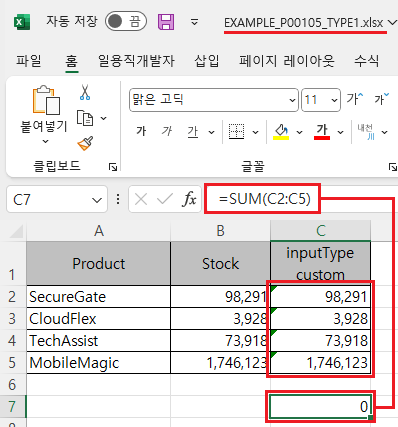
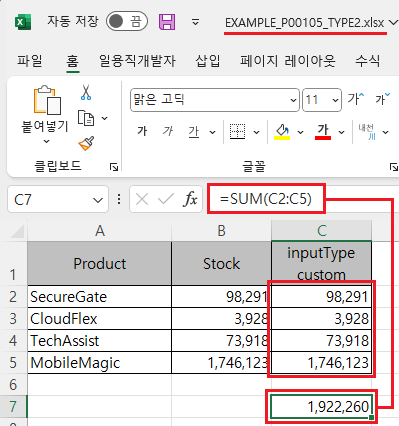
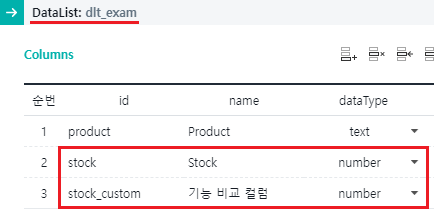
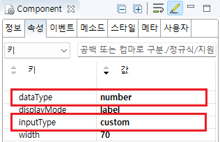

GridView의 'advancedExcelDownload' 메소드의 첫 번째 인자인 JSON 객체의 'customToDataType'을 사용하여 엑셀 다운로드 시 숫자형 서식을 설정한 예제입니다. 'customToDataType'을 'true'로 설정하면, 바디 컬럼의 'inputType'이 'custom'이며 숫자형 데이터로 구성되어 있는 경우, 엑셀에 숫자형 서식이 적용되어 연산이 가능합니다. 기본 동작은 연산이 문자형 서식이 적용되어 연산이 되지 않습니다.
엑셀 다운로드 옵션 "customToDataType"은 아래의 조건일 때 동작됩니다.
조건)
GridView 컬럼의 inputType이 custom이고,
DataList의 dataType이 number 또는 bigdecimal으로 설정되었을 때.
엑셀 다운로드하기 - 기본 동작
엑셀 다운로드하기 - 엑셀 다운로드의 옵션 "customToDataType" 활성화
1
STEP 1: 버튼 '엑셀 다운로드 - 기본'을 클릭합니다.
2
STEP 2: 실행된 결과를 확인합니다.
다운로드 된 엑셀 파일 "EXAMPLE_P00105_TYPE1.xlsx"을 실행합니다.
엑셀 "inputType custom" 컬럼의 값의 합계 수식인 "SUM(C2:C5)를 설정했을 때 연산 값이 "0"으로 표시됩니다.
Image 1.다운로드된 엑셀(2021) 파일 예시

1
STEP 1: 버튼 '엑셀 다운로드 - "customToDataType" 옵션 활성화'를 클릭합니다.
2
STEP 2: 실행된 결과를 확인합니다.
다운로드 된 엑셀 파일 "EXAMPLE_P00105_TYPE2.xlsx"을 실행합니다.
엑셀 "inputType custom" 컬럼의 값의 합계 수식인 "SUM(C2:C5)를 설정했을 때 연산 값이 "1,922,260"으로 표시됩니다.
Image 2.다운로드된 엑셀(2021) 파일 예시

GridView와 연결된 DataList 생성 및 연결 방법은 생략되었습니다.
1
STEP 1: DataList의 DataType 정의하기
바디 컬럼의 속성 'dataType'을 'number' 또는 'bigDecimal'으로 지정합니다.
Image 3.웹스퀘어 스튜디오의 데이터컬렉션 설정 예시

2
STEP 2: GridView 바디 컬럼의 속성을 설정합니다.
[필수] inputType="custom"
[필수] dataType="number"
[선택] displayFormat="#,###"
Image 4.웹스퀘어 스튜디오의 Component View - 속성 설정 예시

Example 1.Source
<!-- gridView 의 소스 본문 예시 --> <w2:gridView> <!-- 중략 --> <w2:gBody id="gBody1"> <w2:row id="row2"> <w2:column inputType="custom" id="stock_custom" dataType="number" displayFormat="#,###"> </w2:column> <!-- 중략 --> </w2:row> </w2:gBody> </w2:gridView>
3
STEP 3: 엑셀 다운로드 스크립트를 정의합니다.
GridView의 'advancedExcelDownload' 메소드를 사용하여 스크립트를 작성합니다. 세부 설정은 아래의 스크립트에 작성되었습니다.
Example 2.Script
//예제 파일의 스크립트 "scwin.btn_ex2_onclick"를 참고하세요. var jsnOptions = { fileName : "EXAMPLE_P00105_TYPE2.xlsx", //엑셀의 파일명 customToDataType : "true" //inputType이 custom인 경우 엑셀의 서식을 DataList에 정의된 DataType 형으로 지정합니다. }; //jsnOptions.customToDataType [default: 없음] "true"인 경우 inputType="custom"인 경우 dataType에 따라 Excel 파일에 표시 형식을 출력. dataType="text"인 셀은 Excel의 표시형식에 '텍스트' 출력, dataType="number" 혹은 "bigDecimal" 셀은 "숫자" 출력. //GridView "grd_exam1"의 엑셀 다운로드 실행 grd_exam1.advancedExcelDownload(jsnOptions);
advancedExcelDownload( options , infoArr )